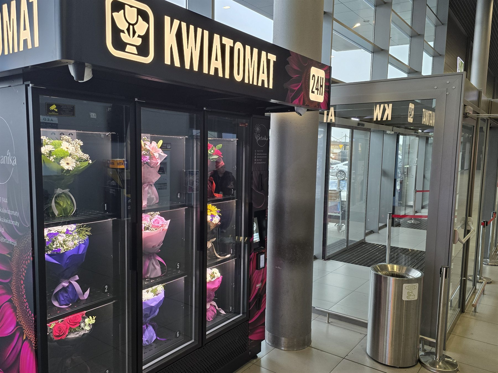
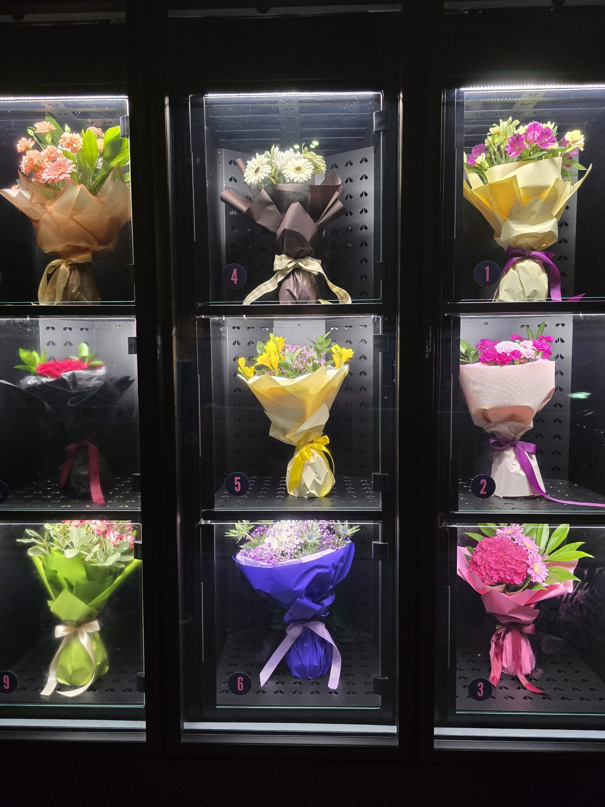
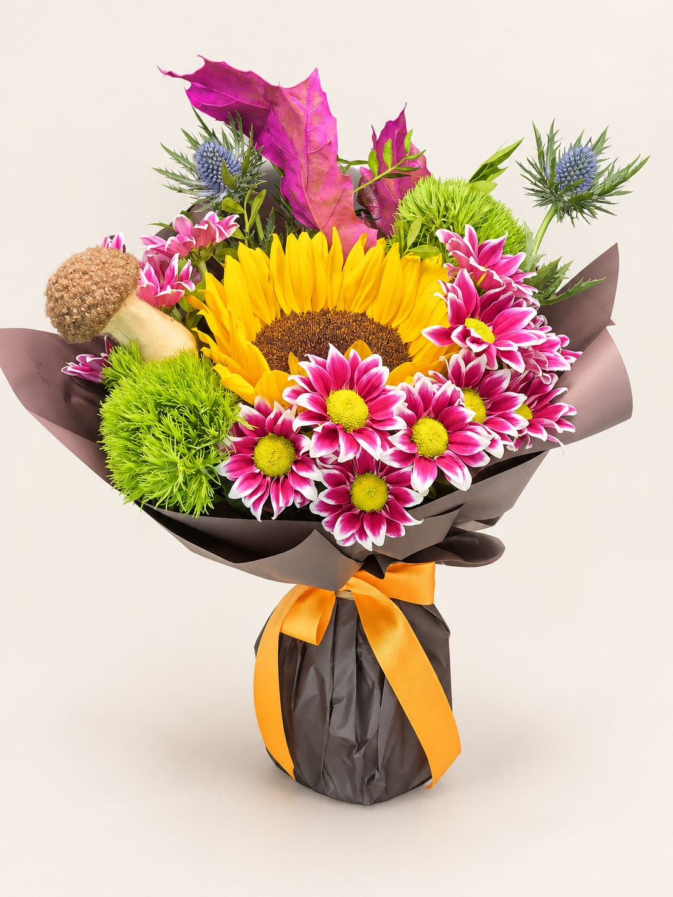

Katowice Airport
Kwiaty 24/7 w Terminalu C
Gdzie znaleźć kwiatomat i jak szybko wybrać bukiet po przylocie albo przed powitaniem bliskiej osoby.
Czytaj poradnikSprawdź, gdzie znaleźć nasze kwiatomaty dostępne przez całą dobę, jak wygodnie kupić bukiet i co zrobić, żeby kompozycja dłużej cieszyła oko.
Bez zbędnych komplikacji: konkretne informacje o obu lokalizacjach Betaniki oraz podstawach pielęgnacji kwiatów ciętych.

Gdzie znaleźć kwiatomat i jak szybko wybrać bukiet po przylocie albo przed powitaniem bliskiej osoby.
Czytaj poradnik
Najważniejsze informacje o punkcie przy ul. Śląskiej 45 oraz zakupie kwiatów o dowolnej porze.
Czytaj poradnik
Przygotowanie wazonu, przycinanie łodyg i kilka prostych zasad, które pomagają kwiatom dłużej dobrze wyglądać.
Czytaj poradnik
Jak chłodzenie, ogrzewanie, obieg powietrza i monitoring pomagają operatorowi utrzymywać odpowiednie warunki dla bukietów.
Poznaj kwiatomatWybierz punkt w Siemianowicach Śląskich albo na Katowice Airport. Oba kwiatomaty są dostępne 24 godziny na dobę, 7 dni w tygodniu.
Zobacz lokalizacje